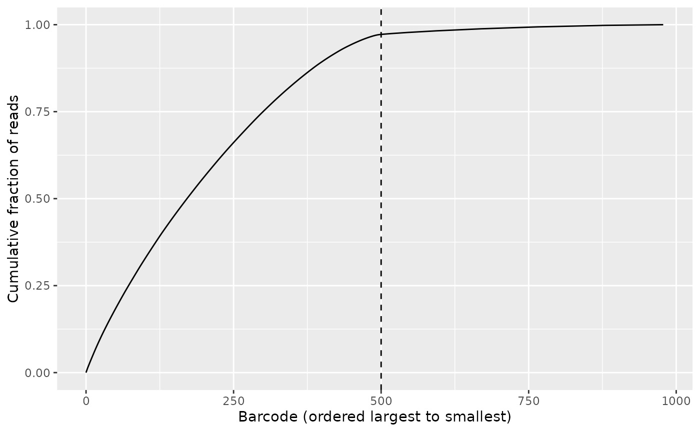
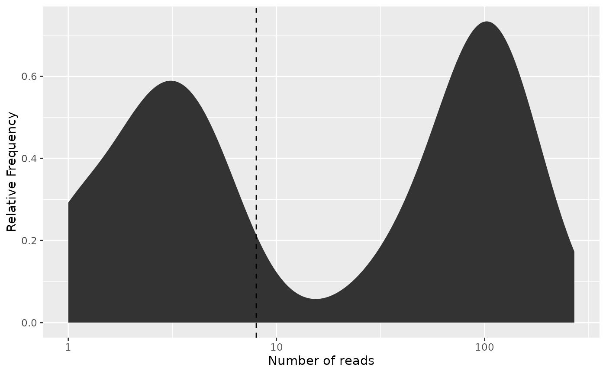

Introduction to combinatorial demultiplexing
Jakob Peder Pettersen
UiT, the Arctic University of Norway, Department of Computer Sciencejakobpeder.pettersen@gmail.com
15 December 2025
Source:vignettes/demultiplexing.Rmd
demultiplexing.RmdBasics
When and why to use this package
This package is aimed at single-cell RNA-seq approaches such as SPLiT-seq [1; 2], BacDrop [3], and PETRI-seq [4; 5]. Here, each cell to be sequenced is defined by its own unique combination of multiple DNA barcodes. We do assume that the individual barcodes come from a predefined whitelist, but that the combination of barcodes is random and that every possible combination of barcodes is valid. In order to identify from which cell each read is coming from, we must extract the barcodes, compare them with the reference barcodes, and find the best match.
Required knowledge
posDemux
uses the Biostrings
package for handling sequencing data and hence a basic understanding of
Biostrings is necessary to use this package. Also important
to note is the fact that while posDemux does provide
utilities for demultiplexing scRNA-seq data, it is designed to be part
of a greater workflow. In particular, the package does not include
essential components of a scRNA-seq workflow like quality control,
alignment, feature counting and UMI deduplication, neither does it
provide any utilities for tertiary analysis once the gene count matrix
is constructed. Hence, the user should be familiar with the other
components of such workflows [2] and know how
the functionality of this package plays a part therein.
If you are asking yourself the question “Where do I start using Bioconductor?” you might be interested in this blog post.
Limitations
Since this is a positional demultiplexer, the position of all segments and barcodes must be known in advance and be the same for all reads. Hence, the package is not suited in cases where segments occur at variable positions among the reads. Furthermore, in the cases where the segments are at fixed positions among the reads, but the segment lengths are unknown, it may require some trial and error to obtain the correct segmentation.
The demultiplexer is written with Illumina sequencing in mind. It assumes that substitution sequencing errors may occur, but has no safeguard against indel sequencing errors. Hence, indel errors will result in erroneous segmentation and failure to assign the correct barcode. For sequencing platforms where indel errors are common, such as Nanopore sequencing, this package may therefore not be suitable.
This package does not by itself support combining barcodes on both reverse and forward reads, but this limitation can be circumvented by either artificially merging reads or manipulating the result structures from the demultiplexer.
Ways to interact with this package
This vignette describes the basic usage of the package where the
FASTQ files are read into R before the demultiplexing
begins. For large datasets or memory-limited systems, reading all
sequences into memory at once is too taxing. For this reason,
posDemux has a streaming API where only parts of the input
file is read at a time. For brevity, this functionality is explained in
its own vignette (vignette("streaming")). We believe that
most end-users won’t interact with this package directly, but rather in
the form of a custom-made bioinformatic pipeline. Also, we think that
most developers of bioinformatics pipelines would prefer the streaming
API. Still, we think those developing with this package should have an
understanding of its low-level API as to understand what it does under
the hood.
Install posDemux
This package is hosted on Bioconductor repository for
R packages. In order to install it from a fresh
R install, run:
if (!requireNamespace("BiocManager", quietly = TRUE)) {
install.packages("BiocManager")
}
BiocManager::install("posDemux")
## Check that you have a valid Bioconductor installation
BiocManager::valid()If you want to obtain the development version of the package, it is available on GitHub:
if (!requireNamespace("devtools", quietly = TRUE)) {
install.packages("devtools")
}
devtools::install("yaccos/posDemux")If you compile the package from source, we do recommend you use the
compiler flag -ftree-vectorize as this provides
considerable speedup to the demultiplexer.
Asking for help
As package developers, we try to explain clearly how to use our
packages and in which order to use the functions. But R and
Bioconductor have a steep learning curve so it is critical
to learn where to ask for help. The blog post quoted above mentions some
but we would like to highlight the Bioconductor support site
as the main resource for getting help: Remember to use the
posDemux tag and check the older
posts. Other alternatives are available such as creating GitHub
issues and tweeting. However, please note that if you want to receive
help you should adhere to the posting
guidelines. It is particularly critical that you provide a small
reproducible example and your session information so package developers
can track down the source of the error.
Citing posDemux
We hope that posDemux will be useful for your research. Please use the following information to cite the package and the overall approach. Thank you!
## Citation info
citation("posDemux")
#> To cite package 'posDemux' in publications use:
#>
#> Pettersen J (2025). _posDemux: Positional combinatorial sequence
#> demultiplexer_. R package version 0.99.8,
#> <https://github.com/yaccos/posDemux>.
#>
#> A BibTeX entry for LaTeX users is
#>
#> @Manual{,
#> title = {posDemux: Positional combinatorial sequence demultiplexer},
#> author = {Jakob Peder Pettersen},
#> year = {2025},
#> note = {R package version 0.99.8},
#> url = {https://github.com/yaccos/posDemux},
#> }An example with PETRI-seq
Quick overview of the method
The PETRI-seq method is a method for single-cell RNA-sequencing of
bacteria [4; 5]. It
uses paired-end Illumina sequencing where the forward read contains the
cell barcodes and the transcript UMI, whereas the reverse read contain
the cDNA to be aligned to the genome. Hence, posDemux will
only be applied to the forward reads. We start by loading the
posDemux itself and some helper packages:
Sequence annotation
For PETRI-seq, the forward read consists of the following segments in the following order (from 5’ to 3’):
- UMI: 7 nucletides
- Barcode 3(
bc3) : 7 nucleotides - Linker: 15 nucletides
- Barcode 2(
bc2): 7 nucleotides - Linker: 14 nucletides
- Barcode 1(
bc1): 7 nucleotides - The rest of the read is ignored
Hence, we consider the first segment, the UMI, as a payload (denoted
as P in the sequence annotation) to be kept. The three
barcodes (denoted as B) are used for demultiplexing.
Finally, the linkers and the read past Barcode 1 (denoted as
A) are ignored.
We specify it with as:
Data loading
For the demultiplexing, we need the listing of the barcodes, and of course the reads to demultiplex. For this package, the PETRI-seq barcodes and synthetically generated reads are provided. We load the barcodes:
barcode_files <- system.file("extdata/PETRI-seq_barcodes",
c(
bc1 = "bc1.fa",
bc2 = "bc2.fa",
bc3 = "bc3.fa"
),
package = "posDemux"
)
names(barcode_files) <- paste0("bc", 1L:3L)
barcode_index <- map(barcode_files, readDNAStringSet)… and the FASTQ file containing the forward reads:
input_fastq <- system.file("extdata",
"PETRI-seq_forward_reads.fq.gz",
package = "posDemux"
)
reads <- readDNAStringSet(input_fastq, format = "fastq")posDemux accepts both DNAStringSet and
QualityScaledDNAStringSet as input where the latter contain
the quality scores of the reads. However, the quality score is ignored
by the demultiplexer and the only reason to pass a
QualityScaledDNAStringSet is when it is desirable to retain
the quality scores in the payload.
Running the demultiplexer
Before we run the demultiplexer, we must ensure that the barcodes index is arranged in the correct order:
barcodes <- barcode_index[c("bc3", "bc2", "bc1")]We are now ready to run the demultiplexer:
demultiplex_res <- combinatorial_demultiplex(
reads,
barcodes = barcodes,
segments = sequence_annotation,
segment_lengths = segment_lengths
)The main results from this demultiplexer are the table of assigned barcodes:
head(demultiplex_res$assigned_barcodes)
#> bc3 bc2 bc1
#> seq_1 "bc3_57" "bc2_51" "bc1_94"
#> seq_2 "bc3_72" "bc2_94" "bc1_95"
#> seq_3 "bc3_23" "bc2_37" "bc1_85"
#> seq_4 "bc3_85" "bc2_81" "bc1_17"
#> seq_5 "bc3_49" "bc2_64" "bc1_77"
#> seq_6 "bc3_3" "bc2_45" "bc1_33"the table of mismatches to the barcode:
head(demultiplex_res$mismatches)
#> bc3 bc2 bc1
#> seq_1 0 0 0
#> seq_2 0 0 0
#> seq_3 2 2 2
#> seq_4 0 0 0
#> seq_5 0 0 0
#> seq_6 0 0 0as well as the extracted UMI sequences:
demultiplex_res$payload$UMI
#> DNAStringSet object of length 56895:
#> width seq names
#> [1] 7 GCCTAAC seq_1
#> [2] 7 CCAAGCG seq_2
#> [3] 7 AGTGCAC seq_3
#> [4] 7 CCTAACG seq_4
#> [5] 7 GCTCGTC seq_5
#> ... ... ...
#> [56891] 7 ACGGCTT seq_56891
#> [56892] 7 ATGAGCG seq_56892
#> [56893] 7 ACCTGCG seq_56893
#> [56894] 7 GGATATC seq_56894
#> [56895] 7 GCCTTGA seq_56895Error correction
posDemux handles two types reads filtering:
- Retaining only the reads being matched with a barcode combination after error correction.
- Removing barcode combinations which have few reads as these are usually artifacts and are not assumed to cover the transcripts of an entire cell.
This subsection consider the first type of filtering. During
demultiplexing,the barcode with the smallest Hamming distance to the
read is chosen and the number of mismatches is recorded. If there are
multiple barcodes being equal in distance to the query, one of these
barcodes is chosen. When there are no mismatches for any of the barcode
sets, we obviously want to keep this read. When one or more barcode has
mismatches, posDemux allows for error correction. In that
case, we will keep the read if the number of mismatches to each of its
barcodes is below a certain threshold.
In our example, the smallest Hamming distance between two different barcodes is for all barcode sets. Given , the number of barcode sequencing errors which can be reliably corrected in a barcode set, the minimum distance required between two distinct barcodes needs to be at least . This means that in our case, we can correct for exactly one sequencing error:
filtered_res <- filter_demultiplex_res(
demultiplex_res,
allowed_mismatches = 1L
)We will now inspect the summary of the demultiplexing and filtering:
filtered_res$summary_res
#> Total number of reads: 56895
#> Number of reads failing to demultiplex: 4989 (8.77%)
#> Observed number of unique barcode combinations:978
#> Number of possible barcode combinations: 884736
#> Estimated number of features: 978.5
#> Observed feature to barcode ratio: 0.001105
#> Corrected feature to barcode ratio: 0.001106
#> Estimated number of observed barcode combinations
#> corresponding to more than one feature: 0.5 (0.06%)
#> Number of barcode sets: 3
#> - - - - - - - - - - - - - - - - - - - - - - - - - - - - - - - - - - - - - - - - - - - - - - - - - - - - - - - - - - - - - - - - - - - - - - - - - - - - - - - -
#> Barcode set: bc3
#> Barcode width: 7
#> Number of possible barcodes: 96
#> Number of allowed mismatches: 1
#> Number of reads with 0 mismatches: 51923 (91.26%)
#> Number of reads with 1 mismatches: 671 (1.18%)
#> Number of reads above mismatch threshold: 4301 (7.56%)
#> - - - - - - - - - - - - - - - - - - - - - - - - - - - - - - - - - - - - - - - - - - - - - - - - - - - - - - - - - - - - - - - - - - - - - - - - - - - - - - - -
#> Barcode set: bc2
#> Barcode width: 7
#> Number of possible barcodes: 96
#> Number of allowed mismatches: 1
#> Number of reads with 0 mismatches: 51918 (91.25%)
#> Number of reads with 1 mismatches: 567 (1%)
#> Number of reads above mismatch threshold: 4410 (7.75%)
#> - - - - - - - - - - - - - - - - - - - - - - - - - - - - - - - - - - - - - - - - - - - - - - - - - - - - - - - - - - - - - - - - - - - - - - - - - - - - - - - -
#> Barcode set: bc1
#> Barcode width: 7
#> Number of possible barcodes: 96
#> Number of allowed mismatches: 1
#> Number of reads with 0 mismatches: 51930 (91.27%)
#> Number of reads with 1 mismatches: 642 (1.13%)
#> Number of reads above mismatch threshold: 4323 (7.6%)
#> - - - - - - - - - - - - - - - - - - - - - - - - - - - - - - - - - - - - - - - - - - - - - - - - - - - - - - - - - - - - - - - - - - - - - - - - - - - - - - - -Now, the results in filtered_res$demultiplex_res only
shows the reads either without mismatches or where error correction
could be applied:
head(filtered_res$demultiplex_res$assigned_barcodes)
#> bc3 bc2 bc1
#> seq_1 "bc3_57" "bc2_51" "bc1_94"
#> seq_2 "bc3_72" "bc2_94" "bc1_95"
#> seq_4 "bc3_85" "bc2_81" "bc1_17"
#> seq_5 "bc3_49" "bc2_64" "bc1_77"
#> seq_6 "bc3_3" "bc2_45" "bc1_33"
#> seq_7 "bc3_17" "bc2_57" "bc1_71"
head(filtered_res$demultiplex_res$mismatches)
#> bc3 bc2 bc1
#> seq_1 0 0 0
#> seq_2 0 0 0
#> seq_4 0 0 0
#> seq_5 0 0 0
#> seq_6 0 0 0
#> seq_7 0 0 0We can also see which reads are retained:
head(filtered_res$retained)
#> seq_1 seq_2 seq_3 seq_4 seq_5 seq_6
#> TRUE TRUE FALSE TRUE TRUE TRUEFiltering by barcode frequency
Now as we have conducted the filtering based on barcode mismatches, we proceed with the second kind of filtering. It utilizes the Knee method [6; 4] where the barcode combinations are arranged in descending order on frequency and the most abundant ones are selected. The cutoff is set such that we achieve a saturation where most reads are covered, yet the remaining barcode combinations not covered all have a small number of reads.
We first create a frequency table of the barcodes is question:
freq_table <- create_freq_table(
filtered_res$demultiplex_res$assigned_barcodes
)
head(freq_table)
#> bc3 bc2 bc1 frequency cumulative_frequency fraction
#> 1 bc3_37 bc2_4 bc1_30 270 270 0.005201711
#> 2 bc3_45 bc2_36 bc1_65 246 516 0.004739336
#> 3 bc3_25 bc2_34 bc1_25 235 751 0.004527415
#> 4 bc3_40 bc2_62 bc1_42 221 972 0.004257697
#> 5 bc3_69 bc2_95 bc1_37 219 1191 0.004219165
#> 6 bc3_29 bc2_90 bc1_40 217 1408 0.004180634
#> cumulative_fraction
#> 1 0.005201711
#> 2 0.009941047
#> 3 0.014468462
#> 4 0.018726159
#> 5 0.022945324
#> 6 0.027125958This package contains an interaction Shiny application for selecting the number of barcodes. It can be run by:
interactive_bc_cutoff(freq_table)If you are working outside RStudio, you may have to run
app <- interactive_bc_cutoff(freq_table)
shiny::runApp(app, launch.browser = FALSE)and opening the resulting link inside the browser. If you are working on a headless system, you may consider:
- Using RStudio Server
- Opening a reverse ssh tunnel for the Shiny server
- Copy the frequency table onto your local machine and run the application there
If you run the application, you will see that keeping approximately 500 barcodes is the optimal choice1. We can also calculate the frequency of the least abundant barcode combination being included.
bc_cutoff <- 500L
freq_cutoff <- bc_to_freq_cutoff(freq_table, bc_cutoff)
freq_cutoff
#> [1] 8We can convert the cutoff the other way as well, but it is in general not an exact inverse as multiple barcodes can have the same frequency:
reconstrued_bc_cutoff <- freq_to_bc_cutoff(
freq_table,
freq_cutoff
)
reconstrued_bc_cutoff
#> [1] 505The cutoff can be illustrated by the Knee plot as in the interactive application:
knee_plot(freq_table = freq_table, cutoff = bc_cutoff)
We can also illustrate this filtering by looking at the distribution of barcode frequencies:
# Since the cutoff lines of the plot are provided by the literal x-coordinate,
# we must use the frequency cutoff
freq_plot(freq_table,
cutoff = freq_cutoff, type = "density",
log_scale_x = TRUE
)
Often the frequency plot gets easier to interpret when we scale the y-axis by the number of reads, hence creating a mass plot of where the reads are distributed based on their respective barcodes:
# Since the cutoff lines of the plot are provided by the literal x-coordinate,
# we must use the frequency cutoff
freq_plot(freq_table,
cutoff = freq_cutoff, type = "density",
log_scale_x = TRUE, scale_by_reads = TRUE
)
Exporting results
Now as we know how many barcodes to keep, we can extract the desired results and write it to a table.
We start with the frequency table. Since it is already sorted in descending order of frequency, we simply take the top entries in the table:
selected_freq_table <- freq_table[seq_len(bc_cutoff), ]For finding which reads correspond to these barcodes, we do the following:
assigned_barcodes <- filtered_res$demultiplex_res$assigned_barcodes
read_in_selection <- row_match(assigned_barcodes, selected_freq_table)
selected_assigned_barcodes <- assigned_barcodes[read_in_selection, ]We continue with the UMIs which we convert to a character vector (remember that the payload and assigned barcodes are aligned in order):
assigned_UMI <- filtered_res$demultiplex_res$payload$UMI %>% as.character()
selected_assigned_UMI <- assigned_UMI[read_in_selection]With all of this done, we can make a data frame containing the UMI, read identifier, and barcode assignments:
res_table <- as.data.frame(selected_assigned_barcodes) %>%
dplyr::mutate(
read = rownames(selected_assigned_barcodes),
UMI = selected_assigned_UMI
) %>%
# Ensures the columns appears in the desired order
dplyr::select(read, UMI, bc3, bc2, bc1)
head(res_table)
#> read UMI bc3 bc2 bc1
#> seq_1 seq_1 GCCTAAC bc3_57 bc2_51 bc1_94
#> seq_2 seq_2 CCAAGCG bc3_72 bc2_94 bc1_95
#> seq_4 seq_4 CCTAACG bc3_85 bc2_81 bc1_17
#> seq_5 seq_5 GCTCGTC bc3_49 bc2_64 bc1_77
#> seq_6 seq_6 TGGAGAA bc3_3 bc2_45 bc1_33
#> seq_7 seq_7 ACTTCGA bc3_17 bc2_57 bc1_71Finally, we can write the table to file. The following is the suggested way for achieving the desired formatting:
file <- tempfile(pattern = "barcode_table", fileext = ".txt")
write.table(res_table, file,
row.names = FALSE,
col.names = TRUE, sep = "\t", eol = "\n", quote = FALSE
)Reproducibility
The posDemux
package
was made possible thanks to:
This package was developed using biocthis.
R session information:
#> ─ Session info ───────────────────────────────────────────────────────────────────────────────────────────────────────
#> setting value
#> version R Under development (unstable) (2025-12-12 r89163)
#> os Ubuntu 24.04.3 LTS
#> system x86_64, linux-gnu
#> ui X11
#> language en
#> collate C.UTF-8
#> ctype C.UTF-8
#> tz UTC
#> date 2025-12-15
#> pandoc 3.1.11 @ /opt/hostedtoolcache/pandoc/3.1.11/x64/ (via rmarkdown)
#> quarto NA
#>
#> ─ Packages ───────────────────────────────────────────────────────────────────────────────────────────────────────────
#> package * version date (UTC) lib source
#> assertthat 0.2.1 2019-03-21 [1] RSPM
#> backports 1.5.0 2024-05-23 [1] RSPM
#> bibtex 0.5.1 2023-01-26 [1] RSPM
#> BiocGenerics * 0.57.0 2025-10-30 [1] Bioconduc~
#> BiocManager 1.30.27 2025-11-14 [1] RSPM
#> BiocStyle * 2.39.0 2025-10-30 [1] Bioconduc~
#> Biostrings * 2.79.2 2025-11-05 [1] Bioconduc~
#> bookdown 0.46 2025-12-05 [1] RSPM
#> bslib 0.9.0 2025-01-30 [1] RSPM
#> cachem 1.1.0 2024-05-16 [1] RSPM
#> cli 3.6.5 2025-04-23 [1] RSPM
#> crayon 1.5.3 2024-06-20 [1] RSPM
#> desc 1.4.3 2023-12-10 [1] RSPM
#> digest 0.6.39 2025-11-19 [1] RSPM
#> dplyr 1.1.4 2023-11-17 [1] RSPM
#> evaluate 1.0.5 2025-08-27 [1] RSPM
#> farver 2.1.2 2024-05-13 [1] RSPM
#> fastmap 1.2.0 2024-05-15 [1] RSPM
#> fs 1.6.6 2025-04-12 [1] RSPM
#> generics * 0.1.4 2025-05-09 [1] RSPM
#> ggplot2 4.0.1 2025-11-14 [1] RSPM
#> glue 1.8.0 2024-09-30 [1] RSPM
#> gtable 0.3.6 2024-10-25 [1] RSPM
#> htmltools 0.5.9 2025-12-04 [1] RSPM
#> htmlwidgets 1.6.4 2023-12-06 [1] RSPM
#> httpuv 1.6.16 2025-04-16 [1] RSPM
#> httr 1.4.7 2023-08-15 [1] RSPM
#> IRanges * 2.45.0 2025-10-31 [1] Bioconduc~
#> jquerylib 0.1.4 2021-04-26 [1] RSPM
#> jsonlite 2.0.0 2025-03-27 [1] RSPM
#> knitr 1.50 2025-03-16 [1] RSPM
#> labeling 0.4.3 2023-08-29 [1] RSPM
#> later 1.4.4 2025-08-27 [1] RSPM
#> lifecycle 1.0.4 2023-11-07 [1] RSPM
#> lubridate 1.9.4 2024-12-08 [1] RSPM
#> magrittr * 2.0.4 2025-09-12 [1] RSPM
#> mime 0.13 2025-03-17 [1] RSPM
#> otel 0.2.0 2025-08-29 [1] RSPM
#> pillar 1.11.1 2025-09-17 [1] RSPM
#> pkgconfig 2.0.3 2019-09-22 [1] RSPM
#> pkgdown 2.2.0 2025-11-06 [1] RSPM
#> plyr 1.8.9 2023-10-02 [1] RSPM
#> posDemux * 0.99.8 2025-12-15 [1] local
#> promises 1.5.0 2025-11-01 [1] RSPM
#> purrr * 1.2.0 2025-11-04 [1] RSPM
#> R6 2.6.1 2025-02-15 [1] RSPM
#> ragg 1.5.0 2025-09-02 [1] RSPM
#> RColorBrewer 1.1-3 2022-04-03 [1] RSPM
#> Rcpp 1.1.0.8.1 2025-12-08 [1] RSPM
#> RefManageR * 1.4.0 2022-09-30 [1] RSPM
#> rlang 1.1.6 2025-04-11 [1] RSPM
#> rmarkdown 2.30 2025-09-28 [1] RSPM
#> S4Vectors * 0.49.0 2025-10-30 [1] Bioconduc~
#> S7 0.2.1 2025-11-14 [1] RSPM
#> sass 0.4.10 2025-04-11 [1] RSPM
#> scales 1.4.0 2025-04-24 [1] RSPM
#> Seqinfo * 1.1.0 2025-10-31 [1] Bioconduc~
#> sessioninfo * 1.2.3 2025-02-05 [1] RSPM
#> shiny 1.12.1 2025-12-09 [1] RSPM
#> stringi 1.8.7 2025-03-27 [1] RSPM
#> stringr 1.6.0 2025-11-04 [1] RSPM
#> systemfonts 1.3.1 2025-10-01 [1] RSPM
#> textshaping 1.0.4 2025-10-10 [1] RSPM
#> tibble 3.3.0 2025-06-08 [1] RSPM
#> tidyselect 1.2.1 2024-03-11 [1] RSPM
#> timechange 0.3.0 2024-01-18 [1] RSPM
#> vctrs 0.6.5 2023-12-01 [1] RSPM
#> withr 3.0.2 2024-10-28 [1] RSPM
#> xfun 0.54 2025-10-30 [1] RSPM
#> xml2 1.5.1 2025-12-01 [1] RSPM
#> xtable 1.8-4 2019-04-21 [1] RSPM
#> XVector * 0.51.0 2025-10-31 [1] Bioconduc~
#> yaml 2.3.12 2025-12-10 [1] RSPM
#>
#> [1] /home/runner/work/_temp/Library
#> [2] /opt/R/devel/lib/R/site-library
#> [3] /opt/R/devel/lib/R/library
#> * ── Packages attached to the search path.
#>
#> ──────────────────────────────────────────────────────────────────────────────────────────────────────────────────────Bibliography
This vignette was generated using BiocStyle with knitr and rmarkdown running behind the scenes.
Citations made with RefManageR .
[1] A. B. Rosenberg, C. M. Roco, R. A. Muscat, et al. “Single-cell profiling of the developing mouse brain and spinal cord with split-pool barcoding”. In: Science 360.6385 (Apr. 2018), pp. 176–182. DOI: 10.1126/science.aam8999. URL: https://www.science.org/doi/10.1126/science.aam8999 (visited on 01/23/2025).
[2] L. Kuijpers, B. Hornung, M. C. G. N. van den Hout - van Vroonhoven, et al. “Split Pool Ligation-based Single-cell Transcriptome sequencing (SPLiT-seq) data processing pipeline comparison”. In: BMC Genomics 25.1 (Apr. 2024), p. 361. ISSN: 1471-2164. DOI: 10.1186/s12864-024-10285-3. URL: https://doi.org/10.1186/s12864-024-10285-3 (visited on 01/08/2025).
[3] P. Ma, H. M. Amemiya, L. L. He, et al. “Bacterial droplet-based single-cell RNA-seq reveals antibiotic-associated heterogeneous cellular states”. In: Cell 186.4 (Feb. 2023), pp. 877–891.e14. ISSN: 0092-8674. DOI: 10.1016/j.cell.2023.01.002. URL: https://www.sciencedirect.com/science/article/pii/S0092867423000028 (visited on 01/31/2025).
[4] S. B. Blattman, W. Jiang, P. Oikonomou, et al. “Prokaryotic single-cell RNA sequencing by in situ combinatorial indexing”. En. In: Nature Microbiology 5.10 (Oct. 2020), pp. 1192–1201. ISSN: 2058-5276. DOI: 10.1038/s41564-020-0729-6. URL: https://www.nature.com/articles/s41564-020-0729-6 (visited on 12/12/2024).
[5] S. B. Blattman, W. Jiang, E. R. McGarrigle, et al. “Identification and genetic dissection of convergent persister cell states”. En. In: Nature 636.8042 (Dec. 2024), pp. 438–446. ISSN: 1476-4687. DOI: 10.1038/s41586-024-08124-2. URL: https://www.nature.com/articles/s41586-024-08124-2 (visited on 01/08/2025).
[6] E. Macosko, A. Basu, R. Satija, et al. “Highly Parallel Genome-wide Expression Profiling of Individual Cells Using Nanoliter Droplets”. In: Cell 161.5 (2015), pp. 1202-1214. ISSN: 0092-8674. DOI: https://doi.org/10.1016/j.cell.2015.05.002. URL: https://www.sciencedirect.com/science/article/pii/S0092867415005498.